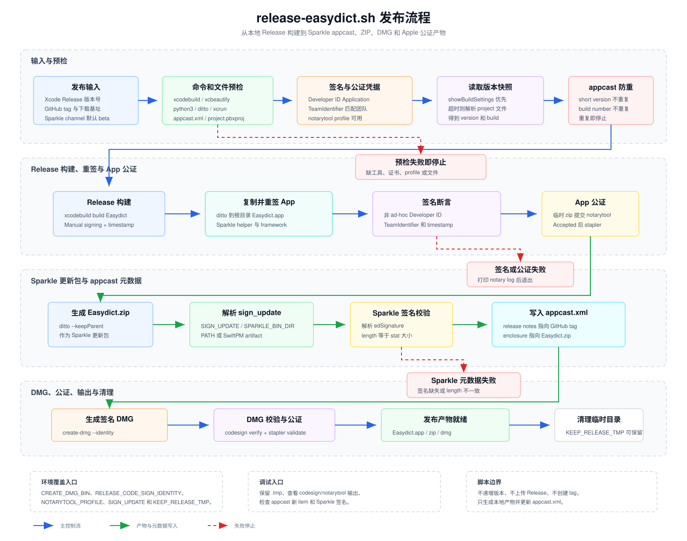

release-scripts 发布脚本说明
release-scripts/release-easydict.sh 是 Easydict 的本地发布打包入口。
它负责把 Release 构建产物转换为可分发的 Easydict.app、
Easydict.zip 和 Easydict.dmg，并同步更新
Sparkle 使用的 appcast.xml。

脚本边界
脚本假设版本号已经在 Xcode 工程中更新完成，不负责递增
MARKETING_VERSION 或 CURRENT_PROJECT_VERSION。
它也不创建 Git tag、不上传 GitHub Release、不推送提交，只生成本地发布产物并修改
appcast.xml。
生成的 Easydict.app、Easydict.zip、
Easydict.dmg 和 .tmp/release-derived-data
都是发布过程产物。除 appcast.xml 外，脚本主要写入被忽略的根目录产物和
.tmp 临时目录。
运行前提
工具链
xcodebuild和xcbeautify用于 Release 构建。python3用于解析 Xcode 工程、notary JSON 和 appcast。ditto用于复制 app bundle 和创建 Sparkle zip。codesign、security、xcrun用于签名和公证。create-dmg必须是 npm 包sindresorhus/create-dmg的命令。
凭据与文件
- 钥匙串中必须存在 Developer ID Application 证书。
notarytoolkeychain profile 必须可用于对应团队。appcast.xml和Easydict.xcodeproj/project.pbxproj必须存在。- appcast 中不能已有相同版本号或 build number。
环境变量入口
| 变量 | 默认值或用途 |
|---|---|
CREATE_DMG_BIN |
默认 create-dmg，可切换到自定义命令路径。 |
RELEASE_DEVELOPMENT_TEAM |
默认 45Z6V4YD5U，用于构建、签名校验和 TeamIdentifier 校验。 |
RELEASE_CODE_SIGN_IDENTITY |
默认 Developer ID Application: Canglong Dai (45Z6V4YD5U)。 |
RELEASE_NOTARY_TEAM_ID |
默认跟随 RELEASE_DEVELOPMENT_TEAM，用于 notarytool。 |
NOTARYTOOL_PROFILE |
默认 easydict-release，必须能通过 xcrun notarytool history。 |
RELEASE_SPARKLE_CHANNEL |
默认 beta；运行时设为空值可生成不带 channel 的稳定版 appcast 条目。 |
SIGN_UPDATE / SPARKLE_BIN_DIR |
覆盖 Sparkle sign_update 查找路径。 |
SPARKLE_PRIVATE_KEY_FILE |
存在时传给 sign_update --ed-key-file。 |
SHOW_BUILD_SETTINGS_TIMEOUT |
默认 45 秒；必须是整数，超时后回退解析 project 文件。 |
KEEP_RELEASE_TMP |
设为 1 时保留 .tmp 中的发布临时文件，便于排查失败。 |
主发布流程
- 进入仓库根目录，校验命令、文件、Developer ID 证书和 notarytool profile。
- 通过
xcodebuild -showBuildSettings读取 Release 版本号；失败或超时时解析project.pbxproj。 - 检查
appcast.xml中没有重复的 short version 或 build number。 - 使用 Manual signing、timestamp、
DEPLOYMENT_POSTPROCESSING=YES和ENABLE_DEBUG_DYLIB=NO执行 Release 构建。 - 将构建出的 app bundle 复制到仓库根目录，先重签 Sparkle helper、XPC、framework 和 dylib，再重签主 app。
- 校验 app 与嵌入代码的 Developer ID、TeamIdentifier 和 timestamp，然后 zip app bundle 提交 Apple 公证并 stapler。
- 用
ditto --keepParent生成Easydict.zip，解析sign_update输出中的 Sparkle EdDSA 签名和 zip length。 - 用实际文件大小复核 Sparkle length，然后把新的 item 插入
appcast.xml。 - 调用
create-dmg --identity生成签名 DMG，校验签名后提交公证并 stapler validate。 - 打印三个发布产物路径，并在
KEEP_RELEASE_TMP未开启时清理发布临时目录。
失败边界
- 预检失败：缺少工具、文件、证书、notary profile 或 unsupported
create-dmg会直接退出。 - 版本冲突：appcast 已存在相同版本或 build number 时停止，避免覆盖更新源。
- 签名异常：ad-hoc 签名、非 Developer ID、TeamIdentifier 不一致或缺 timestamp 都会失败。
- 公证异常：
notarytool submit未返回Accepted时会尝试打印 submission log。 - Sparkle 异常：无法解析
sparkle:edSignature、无法解析 length 或 length 与 zip 实际大小不一致时停止。 - 安全清理：清理函数只删除
.tmp下的发布临时路径，避免误删仓库外文件。
调试入口
- 需要保留构建和公证中间产物时，设置
KEEP_RELEASE_TMP=1后重新运行脚本。 - 签名失败时先检查
RELEASE_CODE_SIGN_IDENTITY、钥匙串证书和security find-identity -v -p codesigning输出。 - 公证失败时查看脚本打印的
notarytool log，确认 hardened runtime、嵌入 framework 和 Team ID。 - Sparkle 失败时检查
SIGN_UPDATE、SPARKLE_BIN_DIR、SwiftPM Sparkle artifact 和私钥文件。 - appcast 更新后重点检查新增 item 的
sparkle:version、sparkle:shortVersionString、下载 URL、release notes URL 和 EdDSA 签名。